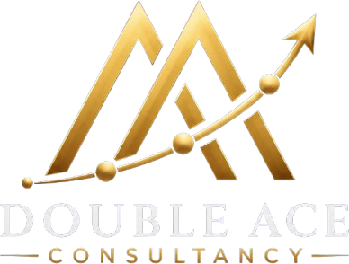

01 / Capability Creation
BUILD
We help businesses develop new capabilities, strengthen internal systems, and build the strategic foundations required for long-term success.

In an increasingly interconnected world, growth is rarely created through expertise in a single function, industry or discipline.
It emerges at the intersection of Policy, Technology, Market Needs, Strategy and Execution.
Double Ace Consultancy helps organisations navigate this intersection—creating new capabilities, unlocking new opportunities and transforming ambition into sustainable outcomes.
We help businesses develop new capabilities, strengthen internal systems, and build the strategic foundations required for long-term success.
We connect businesses with the right ecosystems, partnerships, technologies, markets, and opportunities to accelerate growth.
We enable organizations to expand efficiently, optimize performance, and achieve sustainable growth with confidence.
Every organisation encounters defining moments in its growth journey.
A founder transforming an idea into a business. A family enterprise seeking its next growth engine. A technology company developing a new product. A manufacturer entering a new sector. An established organisation preparing for its next phase of growth.
These moments require more than advice. They require the ability to align strategy with execution, technology with market needs and opportunity with capability.
At Double Ace Consultancy, we help organisations navigate this intersection—unlocking opportunities, building capabilities and creating sustainable pathways for growth.
Building businesses that are designed to scale.
Creating the next growth engine.
Transforming ideas into scalable business capabilities.
Connecting businesses to opportunities.
Navigating complexity with confidence.
Building credibility today while preparing for tomorrow.
Some specialise in an industry.
We specialise in the intersections.
At Double Ace, we operate where Policy, Technology, Market Needs, Strategy and Execution converge.
This enables us to connect opportunities, capabilities and stakeholders—helping organisations build faster, scale smarter and create lasting competitive advantage.
We work with organisations operating in complex, technology-driven and highly regulated environments—helping them build capabilities, unlock growth opportunities and create sustainable competitive advantage.
We bring the perspective to connect strategy with execution, technology with market needs, capability with opportunity and ambition with growth.
We operate at the intersection of Policy, Technology, Market Needs, Strategy and Execution—where opportunities are created, competitive advantages are built and transformation takes shape.
We focus on what works in practice—not just what looks good on paper.
We help organisations connect with the right stakeholders, technologies, institutions and markets.
We transfer insights across sectors and uncover opportunities others often overlook.
Double Ace Consultancy partners with founders, family businesses, and growth-focused enterprises to build capabilities, unlock opportunities, and drive sustainable growth.
Combining strategic insight with practical execution, we help organizations navigate complexity, strengthen competitiveness, and create lasting value.
Operating at the intersection of Policy, Technology, Market Needs, Strategy, and Execution, we transform vision into measurable business outcomes.
We work across Aerospace & Defence, Shipping & Maritime, Medical Devices & Healthcare Technologies, Advanced Manufacturing, Simulation, Digital Twins & Training Technologies, Unmanned Systems, Robotics & Autonomous Technologies, Advanced Materials & Specialty Technologies, Human Capital & Leadership, and Education & Learning.
Unlike traditional consulting firms that specialise in a function or an industry, Double Ace specialises in connecting disciplines, ecosystems and opportunities to create sustainable competitive advantage.
Yes. We support Diversification Strategy, New Market Entry, Opportunity Assessment & Growth Roadmaps, Growth Strategy & Scale-Up, and Market Access & Business Development.
Yes. We help with Licensing, Compliance & Certifications, Government Procurement Readiness, and Incentives, Grants & Policy Support.
Yes. We help organisations connect with the right stakeholders, technologies, institutions and markets through Strategic Partnerships & Joint Ventures, Ecosystem Development & Stakeholder Engagement.
Whether you are building a new business, creating a new capability, entering a new market or preparing for your next phase of growth, you can contact Double Ace at director@doubleaceconsultancy.com.
Double Ace Consultancy helped us streamline our growth strategy and identify new market opportunities. Their practical approach and deep industry understanding delivered measurable results.
The team's strategic guidance and ecosystem connections played a crucial role in accelerating our business expansion. Highly recommended for growth-focused organizations.
Their ability to bridge strategy with execution sets them apart. We gained clarity, improved processes, and a stronger market position through their advisory support
Working with Double Ace Consultancy was a game-changer. Their insights helped us navigate challenges, optimize operations, and prepare for sustainable growth.